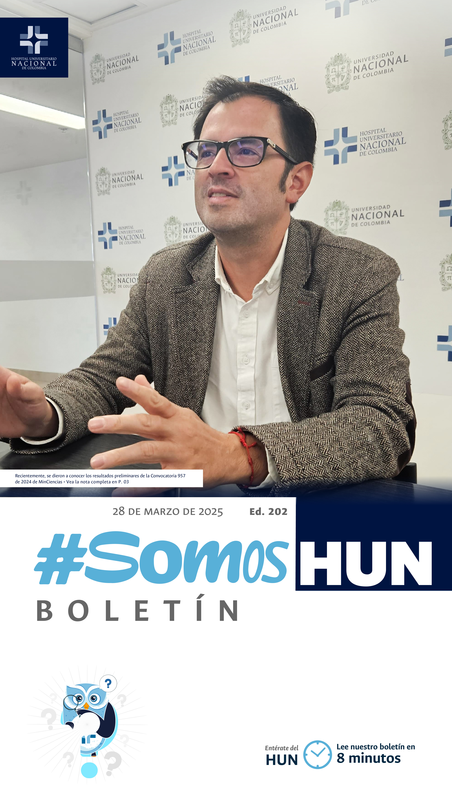
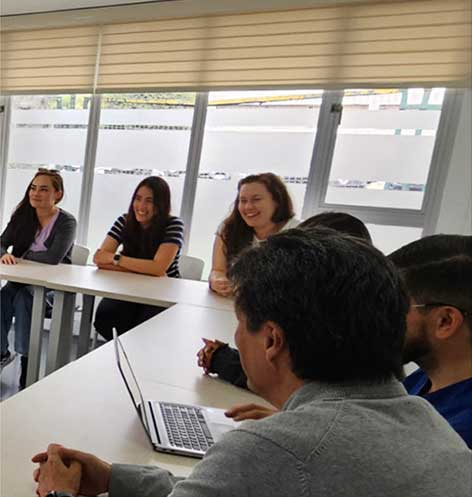
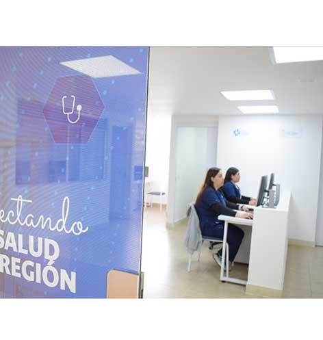
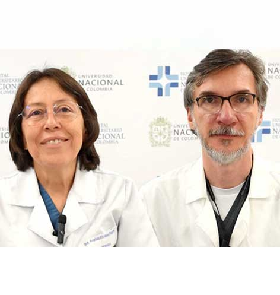
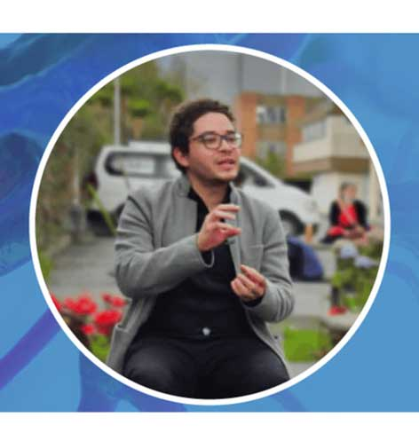
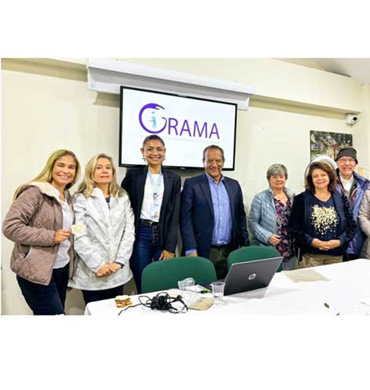
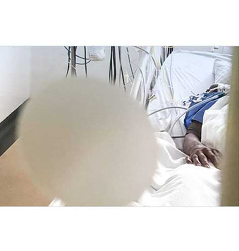
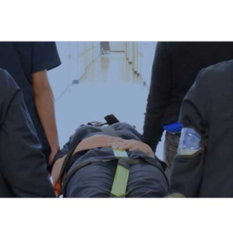

Ver todos los boletines
El HUN incrementa a 39 sus grupos de investigación
Recientemente, se dieron a conocer los resultados preliminares de la Convocatoria 957 de 2024 de MinCiencias, la cual tiene como objetivo reconocer y medir los grupos de investigación, desarrollo tecnológico e innovación, así como a los investigadores dentro del Sistema Nacional de Ciencia, Tecnología e Innovación (SNCTI). El Hospital Universitario Nacional de Colombia, que ha participado activamente en convocatorias anteriores, nuevamente destacó en esta edición, pasando de 33 grupos en 2021 a 39 en 2024 y destaca 3 de sus grupos catalogados con el nivel más alto según la clasificación de Minciencias, el cual es el nivel A1.Leer más

Telemedicina, una innovación en la atención pediátrica
Según el Análisis de la situación en Colombia (ASIS) publicado por el Ministerio de Salud y Protección Social, entre 2009 y 2021 se presentaron más de 66 millones de visitas a urgencias, de las cuales tan solo el 60% fueron situaciones de urgencias reales, es decir, el otro 40% pudo ser atendidas por otros medios. Según el informe, lo que más congestiona el sistema de urgencias pediátricas son las infecciones respiratorias las cuales en su mayoría son auto limitadas, lo que significa que el cuerpo puede controlarlas sin necesidad de antibióticos y suelen resolverse en un plazo de 15 días.Leer más

Estándar Clínico Basado en la Evidencia
tamización, diagnóstico,
tratamiento y seguimiento de
pacientes adultos con diabetes
mellitus tipo 2 atendidos en la
consulta externa del Hospital
Universitario Nacional de
Colombia
La diabetes mellitus es un trastorno metabólico heterogéneo caracterizado por la presencia de hiperglucemia debido a un deterioro de la secreción de insulina, una acción defectuosa de la insulina o ambas. La diabetes mellitus tipo 2 (DM2) representa casi el 90% del total de casos de diabetes y es debido a una pérdida progresiva no autoinmune de la secreción adecuada de insulina de las células β, frecuentemente en un contexto de resistencia a la insulina y síndrome metabólico.Leer más

Misterios Púrpura: Desmitificando la epilepsia
En el mundo hay aproximadamente 50 millones de personas con epilepsia y al menos 1 de cada 26 personas va a padecer esta enfermedad, explica Jorge Ramírez neurólogo epileptólogo del HUN quien trabaja en la desmitificación de la epilepsia. “Se puede estudiar con epilepsia, se puede trabajar con epilepsia, se puede vivir con epilepsia” recalca el Dr. Ramírez, además les recuerda a los pacientes, familiares y cuidadores que no están solos, y que la UNAL y el HUN trabajan constantemente para brindarles el apoyo que necesitan. Si quiere ver la transmisión completa que hizo el HUN en conmemoración del día mundial de la epilepsia.Leer más

Humanización
estuvo en GRAMA al Barrio
En el encuentro habitual que tiene la
comunidad del barrio la Esmeralda,
localidad de Teusaquillo estuvo
presente la Coordinadora de
Humanización de nuestro hospital Francy
Oca, presentando las estrategias que desde la
política y el Programa “En nuestro hospital,
tú no eres 1 +” tenemos hacia la población
adulta mayor..
Leer más

GESTIÓN OPERATIVA Y CUIDADO DEL DONANTE
Disponible en formación asincrónica
Con el objetivo de desarrollar
competencias clínicas y
asistenciales que permitan la
optimización del cuidado del
potencial donante, desde su detección
hasta su traslado a cirugía de extracción,
reconociendo su rol dentro del proceso
interdisciplinar e interinstitucional de
donación y trasplante, el HUN lanzó
este curso Virtual Asincrónico, dirigido
a profesionales de la salud que presten
sus servicios en hospitalización, cuidados
intensivos y cirugía.Leer más

Se parte de la brigada HUN
¿Qué significa para ti ser brigadista? Jhonatan León, Coordinador de Formación y Cultura Organizacional del HUN, nos cuenta la importancia de este rol para el hospital y su vida. ¿Te gustaría hacer parte de este equipo?Leer más